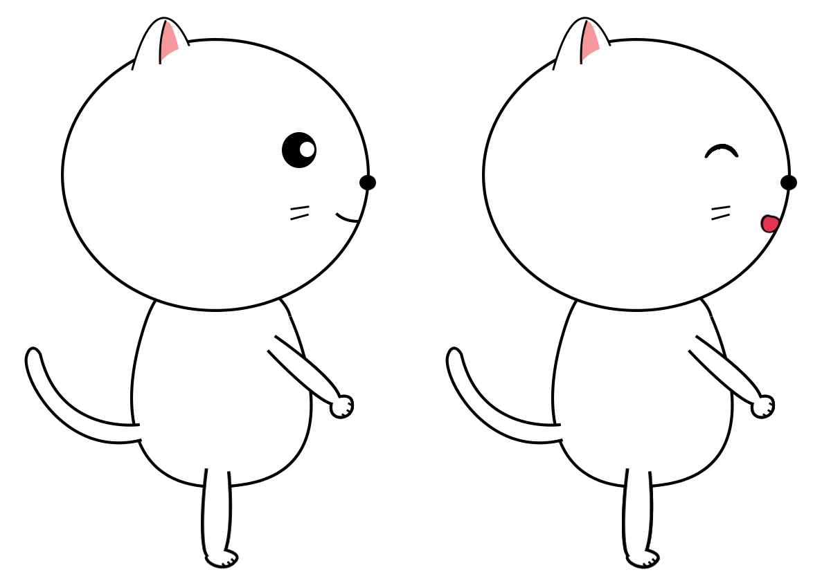
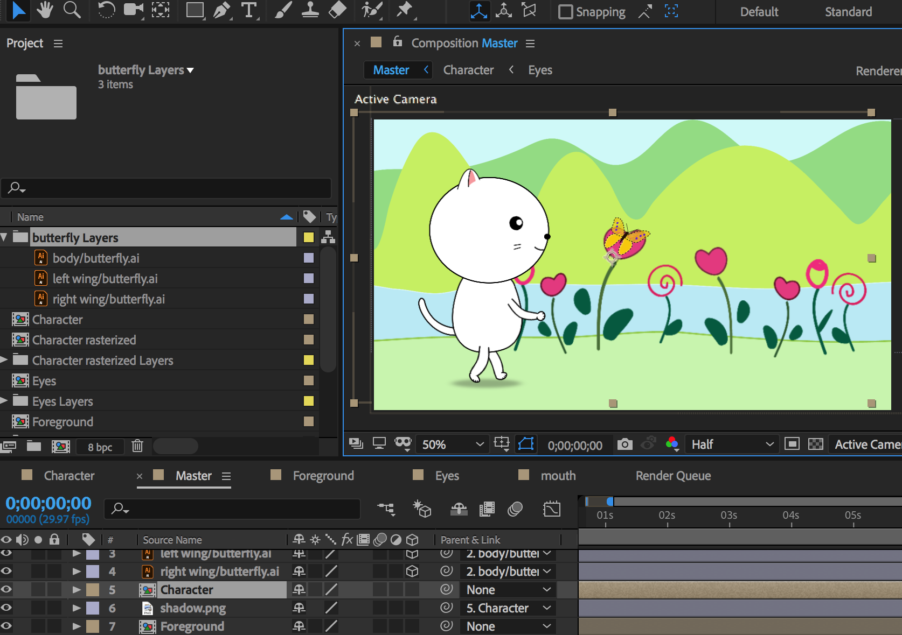

This is the character design and walk cycle animation project.
I myself designed and illustrated the character, the butterfly, the flowers, and the background in Adobe Illustrator and Photoshop. The character was designed to have a large head above tiny hands and feet to look cute and playful.
After illustrating and building the background and the character, I did all the animation work in Adobe After Effects. To bring more fun to the animation, besides the cat - the main character, I also introduced another little friend - the butterfly.
Let's smile like a child and “Walk as if you are kissing the Earth with your feet.” (a quote by Thích Nhất Hạnh)
All details in the animation are illustrated and animated by me